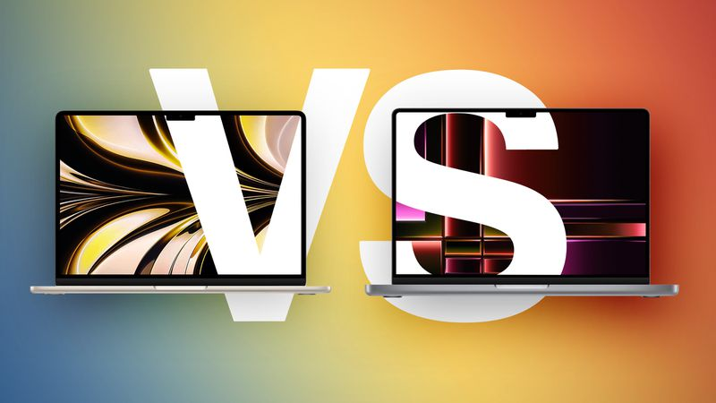
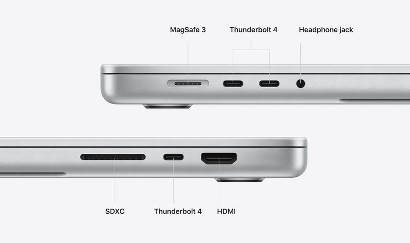
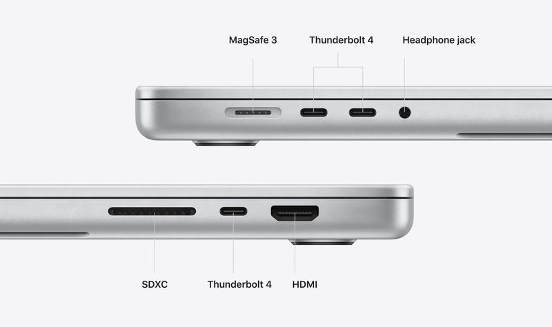

macbook air vs macbook pro

Despite now being similar in appearance, the MacBook Air and the MacBook Pro are very
different machines, so should you consider purchasing the 13- or 15-inch MacBook Air,
which start at $1,099, to save money, or do you need one of the higher-end 14- or 16-inch
MacBook Pro models, which cost at least $900 more? Our guide helps to answer the question
of how t[o decide which of these two popular Apple silicon machines is best for you.
This guide focuses on the high-end, 14- and 16-inch MacBook Pro models with the M2 Pro and M2 Max chips rather than the 13-inch MacBook Pro with the M2 chip. See our other buyer's guide to understand the differences between the 13-inch MacBook Pro and the 14- and 16-inch models.

All in all, the MacBook Pro is much more versatile in terms of connectivity,
even possessing newer Bluetooth and Wi-Fi specifications, offering useful features fo
r professionals who use
SDXC cards from digital cameras, veb
multiple external displays, or even simply more USB peripherals.
Earlier this year, Apple announced a major update for its high-end MacBook Pro models, adding the M2 Pro and M2 Max chips, better battery life, Wi‑Fi 6E, Bluetooth 5.3, and an HDMI 2.1 port. In 2022, Apple updated the MacBook Air with a complete redesign and the M2 chip, followed by an all-new 15-inch model this year , so how do the two product lines compare?
This guide focuses on the high-end, 14- and 16-inch MacBook Pro models with the M2 Pro and M2 Max chips rather than the 13-inch MacBook Pro with the M2 chip. See our other buyer's guide to understand the differences between the 13-inch MacBook Pro and the 14- and 16-inch models.
| MacBook Air | macbook pro |
|---|---|
| 13.6-inch or 15.3-inch display | 14.2-inch or 16.2-inch display |
| LCD Liquid Retina display display | Mini-LED Liquid Retina XDR display with ProMotion |
| 500 nits brightness | Up to 1,000 nits sustained (full-screen) brightness and 1,600 nits peak brightness |
| Apple M2 chip | Apple M2 Pro chip or Apple M2 Max chip/th> |
| Up to 10-core GPU | Up to 19-core GPU with M2 Pro and up to 38-core GPU with M2 Max |

ABOUT AUTHOR